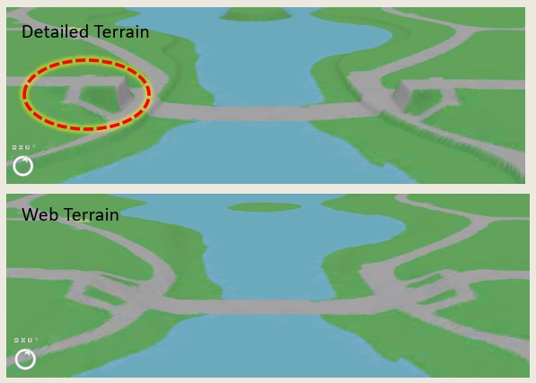
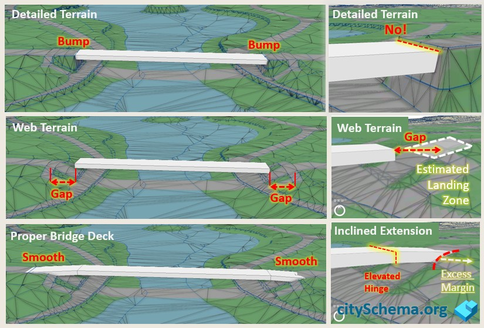
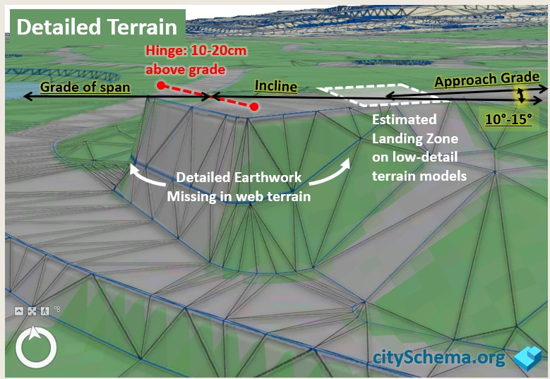
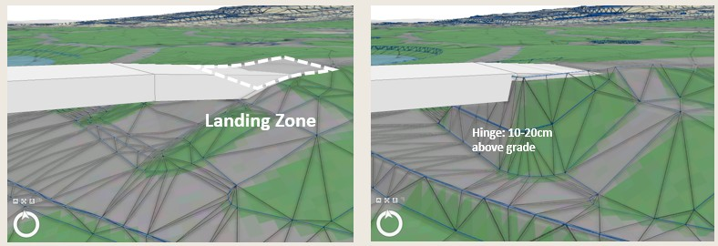
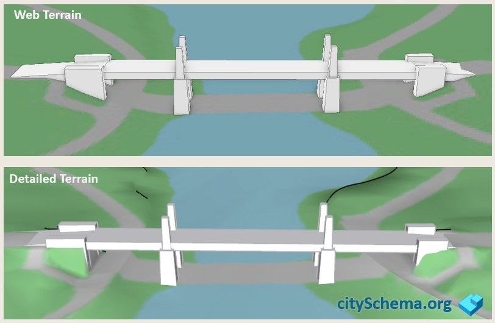
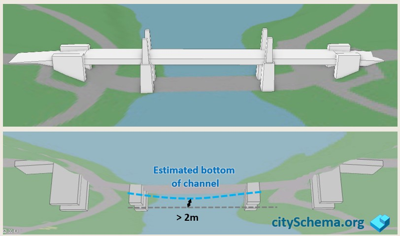
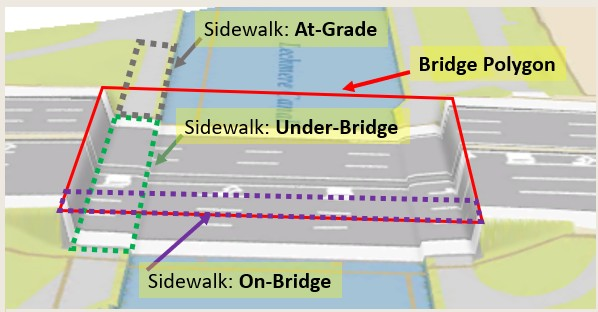
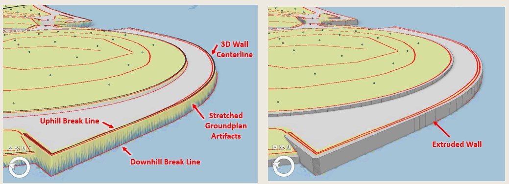

Integrating City Model Components
The 3D city model is built from components collected and created from a variety of contributors using different data collection methods at different times. The three main components of city models in CitySchema are Terrain surface, groundplan, and 3D Models of buildings, bridges and walls. Depending on the presentation mode, whether it be a web-based fly-through or an editable design model the terrain surface may a low resolution raster-based surface or a highly detailed triangulated mesh. If building, bridge and wall models are created to fit perfectly on the most detailed terrain model, when the components are assembled on a less detailed terrain surface for web-viewing the result will be bridges that do not connect with the ground smoothly, building models that appear to float, and situations where the groundplan is stretched and distorted along steep slopes.
This page provides strategies for developing building, bridge and wall models that fit terrain surfaces that are high and low levels of detail.
Topic Index
Detailed and Web-Based Terrain Models
City models integrate 3D terrain surfaces with draped 2d groundplan information and collections of 3D models of buildings, bridges and walls. When the city model os presented on the web, the terrain model is usually less detailed than the more precise surfaces used when the 3d bridge, building and wall models are created and modified. If the 3D models are created to fit the detailed terrain perfectly, then, oftentimes there will be gaps visible when the models are presented on the less detailed terrain surfaces used for web presentation.

Anticipating this, 3d models can be built with a margin for error that fills in expected gaps when presented on web terrain. When presented on detailed terrain. these extra bits are concealed underneath the terrain surface.
Detailed and Web-Based Terrain Models
To look right, bridges must meet the terrain in a smooth transition from the road grade on either side of the span. The figure below illustrates the problem that arises when 3d models of bridges are built to meet detailed terrain exactly, there will be gaps when the model is presented on a less detailed terrain model.

When a new detailed terrain model is acquired, the model created to touch the old terrain model at the edge of the cut, will probably show a bump.
The trick for creating error-tolerant bridhe models is to make the model arrive at the edge of the cut a little too high, and the to descend to land on the road at a place that is in advance of the detailed earthwork.
Approach Grade and Edge of Cut

To Create a bridge model that meets different terrain surfaces smoothly it ie helpful to consider the concepts illustrated at the right. The detailed terrain reveals a precise edge of cut and an approach grade. The approach grade will be the same on the lass detailed surface.
Hinge and Landing Zone
When modeling a bridge model we have a detailed terrain model that reveals the detailed earthwork and edge of cut. We don't know exactly where the edge of cut is going to fall on future terrain models. We should anticiapte that the earthwork will be missing or generalized on web-based surfaces.

The error tolerant bridge model comes in 15-30 cm above the precise edge of cut, then has a hinge that deflects at an angle that is slightly steeper than the approach grade so that the bridge meets the approach grade along a line that is in advance of the detailed earthwork.
 
Bury your Footings
Most terrain models show the surface of the water. Some don't. In any case the elevation of the water surface can fluctuate. It does not hurt to project 3D models below the surface since this is almost always hidden from view, as shown below.

Grade Separation in Groundplan
In the CitySchema framework, the groundplan is an image that represents the Roads, Sidewalks and other graded areas, Vegetation, Open Water, etc. The groundplan is a coverage with no gaps that is draped on the terrain surface providing the context for the 3D models. In traditional GIS applications, groundplan features are presented as a 2d map which shows all of the roads running over viaducts and bridges, covering over all of the detail that is underneath. The groundplan used for 3D city modeling, however, should represent the situation under bridges.
Because GIS data collection methods normally assume the 2D plan view, special care must be taken to develop groundplan layers that can be filterd to show both the Bridges-On and the Bridges-Off view.

The image above shows a 2D groundplan in 3D with the bridge off. This is because we currently don;t have a groundplan that is properly articulated. Next time we order new photogrammetry the recommendation wil be as follows:
- The bridge deck will be represented by a polygon that covers the portion of the bridge or viaduct that spans over the under-bridge areas.
- The bridge polygon is used to split ALL Groundplan features into At-Grade, On-Bridge and Under-Bridge.
- In application, the 2D groundplan will exclude Under-Bridge features. The 3D groundplan will exclude On-Bridge features.
- On-Bridge features may be applied as texture to 3D bridge objects.
Walls
In an ideal city model, groundplan features would align perfectly with creases in the terrain surface. Creases, also known as Breaks in Grade which occur along steep edges of road cuts, embankments and seawalls. Unfortunately these outstanding terrain features attract the eye because the corresponding groundplan edges (that may appear as crisp edges in 2D) become stretched in flame-like patterns along the near-vertical slopes.

- Photogrammetrists use stereo aerial photograph interpretation to trace the wall centerline in 3D.
- Wall centerlines are labeled according to a wall type and wall width categories.
- Ideally wall centerlines fall midway between the up-hill and down-hill breaks in grade so that the centerline can be buffered to create a plygon that is extruded to create a 3d wall that covers the slope.
- Alternatively, a 3D wall may be defined by tracing its top edge in a direction that keeps the down-hill side of the wall on the right-hand side.